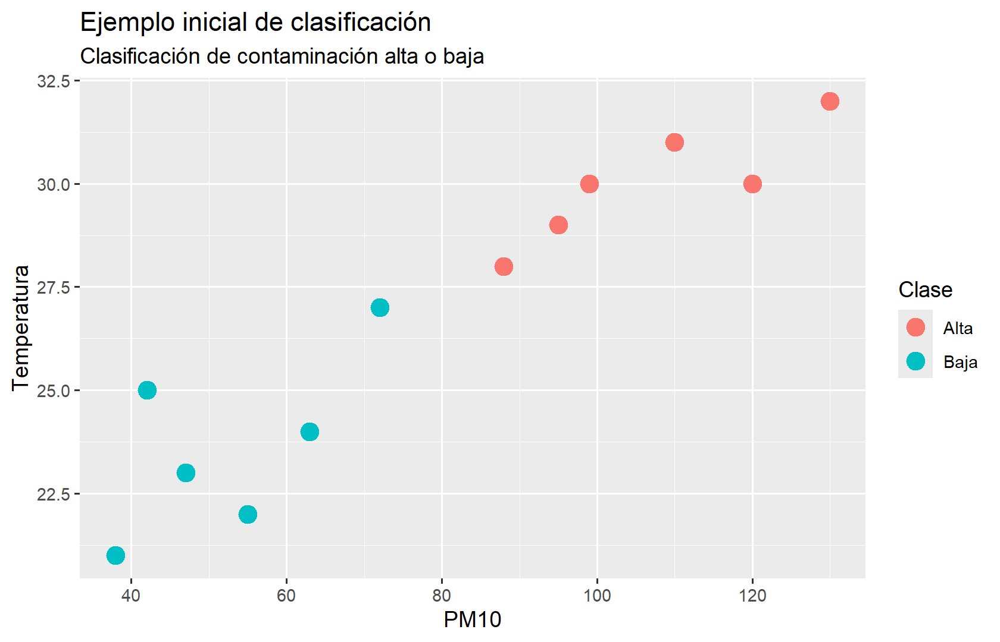

Código
pm10 <- 85
if (pm10 > 75) {
print("Contaminación alta")
} else {
print("Contaminación baja")
}[1] "Contaminación alta"Al finalizar este capítulo, el lector será capaz de:
El aprendizaje automático, también conocido como Machine Learning, es una rama de la inteligencia artificial que permite construir modelos capaces de aprender patrones a partir de datos.
En la programación tradicional, una persona define reglas. En aprendizaje automático, en cambio, proporcionamos ejemplos para que un algoritmo aprenda una relación entre variables de entrada y una salida esperada.
Aprender Machine Learning haciendo proyectos con datos reales.
Supongamos que queremos clasificar un día como de contaminación alta o baja usando una regla fija basada en PM10.
pm10 <- 85
if (pm10 > 75) {
print("Contaminación alta")
} else {
print("Contaminación baja")
}[1] "Contaminación alta"Explicación del código.
Se define el valor de PM10 y se aplica una regla condicional. Si pm10 es mayor que 75, R imprime “Contaminación alta”; si no, imprime “Contaminación baja”.
Interpretación del resultado.
Este ejemplo muestra programación tradicional: la decisión depende de una regla escrita manualmente. En aprendizaje automático, la regla no se escribe directamente; se aprende a partir de datos.
Ahora construyamos una pequeña base de ejemplo.
datos <- data.frame(
dia = 1:12,
pm10 = c(42, 88, 55, 120, 63, 95, 38, 110, 72, 130, 47, 99),
temperatura = c(25, 28, 22, 30, 24, 29, 21, 31, 27, 32, 23, 30),
humedad = c(40, 35, 60, 30, 55, 33, 65, 29, 42, 28, 62, 34),
clase = c("Baja", "Alta", "Baja", "Alta", "Baja", "Alta",
"Baja", "Alta", "Baja", "Alta", "Baja", "Alta")
)
datos dia pm10 temperatura humedad clase
1 1 42 25 40 Baja
2 2 88 28 35 Alta
3 3 55 22 60 Baja
4 4 120 30 30 Alta
5 5 63 24 55 Baja
6 6 95 29 33 Alta
7 7 38 21 65 Baja
8 8 110 31 29 Alta
9 9 72 27 42 Baja
10 10 130 32 28 Alta
11 11 47 23 62 Baja
12 12 99 30 34 AltaExplicación del código.
Se crea una tabla con 12 días. Cada fila contiene variables ambientales (pm10, temperatura y humedad) y una variable de salida llamada clase.
Interpretación del resultado.
La tabla representa ejemplos históricos. En aprendizaje supervisado, estos ejemplos permiten aprender una relación entre variables predictoras y una clase conocida.
La variable respuesta es la variable que queremos predecir. En el ejemplo anterior es clase.
Las variables predictoras son las variables que usamos como entrada para el modelo. En el ejemplo son pm10, temperatura y humedad.
En una primera aproximación podemos hablar de tres grandes tipos:
Este libro se concentrará principalmente en los dos primeros.
Supongamos que tenemos \(n\) observaciones y \(p\) variables predictoras. Podemos representar los datos mediante una matriz:
\[ X = \left[ \begin{array}{cccc} x_{11} & x_{12} & \cdots & x_{1p} \\ x_{21} & x_{22} & \cdots & x_{2p} \\ \vdots & \vdots & \ddots & \vdots \\ x_{n1} & x_{n2} & \cdots & x_{np} \end{array} \right] \]
donde \(x_{ij}\) representa el valor de la variable \(j\) en la observación \(i\).
La variable respuesta se representa como:
\[ Y = \left[ \begin{array}{c} y_1 \\ y_2 \\ \vdots \\ y_n \end{array} \right] \]
El objetivo general del aprendizaje supervisado es encontrar una función \(f\) que permita aproximar la respuesta:
\[ \hat{y} = f(x_1, x_2, \ldots, x_p) \]
Algoritmo: Aprendizaje supervisado
Entrada:
- Matriz de datos X
- Variable respuesta Y
- Algoritmo de aprendizaje
Proceso:
1. Dividir los datos en entrenamiento y prueba.
2. Usar los datos de entrenamiento para aprender una función f.
3. Usar la función f para predecir nuevas respuestas.
4. Comparar las predicciones contra los valores reales.
5. Calcular métricas de desempeño.
6. Interpretar los resultados.
Salida:
- Modelo entrenado
- Predicciones
- Métricas de evaluaciónEl aprendizaje supervisado se utiliza cuando tenemos una variable respuesta conocida. Dentro de este tipo de aprendizaje hay dos tareas principales: clasificación y regresión.
La clasificación se utiliza cuando la variable respuesta es categórica. Algunos ejemplos son alta o baja contaminación, accidente con víctimas o solo daños, tumor benigno o maligno, y correo deseado o no deseado.
La regresión se utiliza cuando la variable respuesta es numérica, por ejemplo: concentración de PM10, temperatura, ventas o número de accidentes.
El aprendizaje no supervisado se utiliza cuando no tenemos una variable respuesta conocida. En lugar de predecir una etiqueta, buscamos patrones ocultos en los datos.
1. Plantear el problema
2. Conseguir los datos
3. Entender las variables
4. Limpiar los datos
5. Explorar los datos
6. Dividir en entrenamiento y prueba
7. Entrenar el modelo
8. Evaluar el modelo
9. Interpretar los resultados
10. Comunicar hallazgoslibrary(ggplot2)
ggplot(datos, aes(x = pm10, y = temperatura, color = clase)) +
geom_point(size = 4) +
labs(
title = "Ejemplo inicial de clasificación",
subtitle = "Clasificación de contaminación alta o baja",
x = "PM10",
y = "Temperatura",
color = "Clase"
)
Explicación del código.
La función ggplot() construye una gráfica de dispersión. En el eje horizontal se coloca pm10, en el eje vertical temperatura y el color representa la clase.
Interpretación del resultado.
La gráfica muestra que los días de contaminación alta tienden a ubicarse en la zona de mayor PM10 y mayor temperatura. Esta separación visual ilustra la idea de clasificación.
set.seed(123)
n <- nrow(datos)
indices_entrenamiento <- sample(1:n, size = round(0.7 * n))
entrenamiento <- datos[indices_entrenamiento, ]
prueba <- datos[-indices_entrenamiento, ]
entrenamiento dia pm10 temperatura humedad clase
3 3 55 22 60 Baja
12 12 99 30 34 Alta
10 10 130 32 28 Alta
2 2 88 28 35 Alta
6 6 95 29 33 Alta
11 11 47 23 62 Baja
5 5 63 24 55 Baja
4 4 120 30 30 Altaprueba dia pm10 temperatura humedad clase
1 1 42 25 40 Baja
7 7 38 21 65 Baja
8 8 110 31 29 Alta
9 9 72 27 42 BajaExplicación del código.
set.seed() permite reproducir la misma selección aleatoria. Después se toma aproximadamente 70% de las filas para entrenamiento y 30% para prueba.
Interpretación del resultado.
El conjunto de entrenamiento se usa para aprender patrones. El conjunto de prueba permite revisar si el modelo funcionaría con datos no vistos.
datos$prediccion_regla <- ifelse(datos$pm10 > 75, "Alta", "Baja")
datos[, c("pm10", "clase", "prediccion_regla")] pm10 clase prediccion_regla
1 42 Baja Baja
2 88 Alta Alta
3 55 Baja Baja
4 120 Alta Alta
5 63 Baja Baja
6 95 Alta Alta
7 38 Baja Baja
8 110 Alta Alta
9 72 Baja Baja
10 130 Alta Alta
11 47 Baja Baja
12 99 Alta AltaExplicación del código.
Se crea una nueva columna llamada prediccion_regla. La regla clasifica como “Alta” cuando PM10 es mayor que 75.
Interpretación del resultado.
La tabla permite comparar la clase real con una predicción generada por una regla simple.
tabla_confusion <- table(
Real = datos$clase,
Predicho = datos$prediccion_regla
)
tabla_confusion Predicho
Real Alta Baja
Alta 6 0
Baja 0 6Explicación del código.
La función table() cruza la clase real con la clase predicha.
Interpretación del resultado.
La diagonal principal contiene los aciertos. Los valores fuera de la diagonal serían errores de clasificación.
exactitud <- mean(datos$clase == datos$prediccion_regla)
exactitud[1] 1Explicación del código.
Se compara cada predicción con la clase real y se calcula la proporción de aciertos.
Interpretación del resultado.
La exactitud indica qué proporción de observaciones fueron clasificadas correctamente. En datos reales los resultados suelen ser más complejos.
El aprendizaje automático permite construir modelos que aprenden patrones a partir de datos. En este capítulo vimos la diferencia entre reglas manuales y aprendizaje a partir de ejemplos.